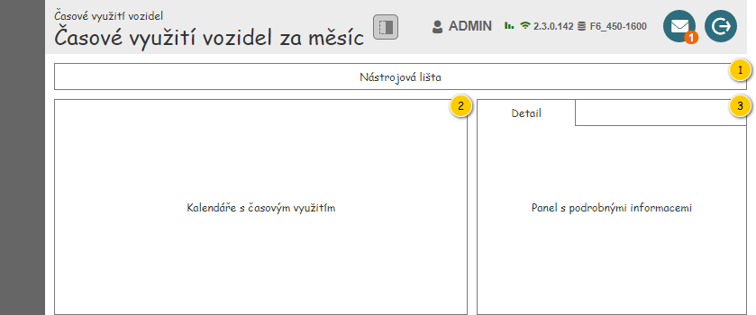
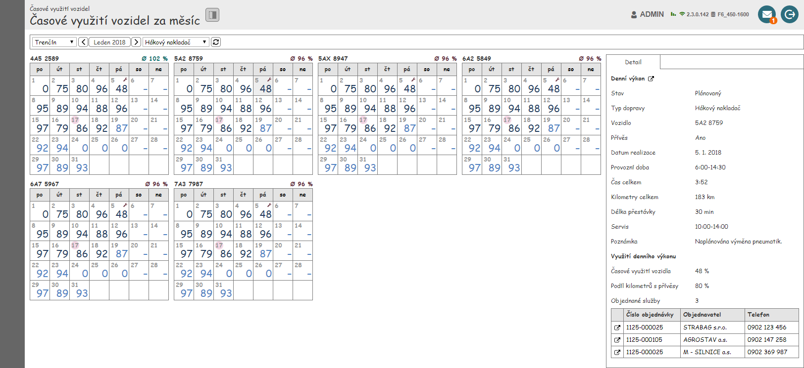
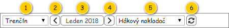
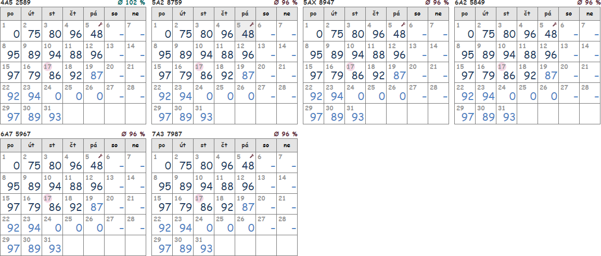

Obrazovka slouží k zobrazení časového využití vozidel za zadané období o délce právě jednoho měsíce.
Poznámka: Jednotlivé dílčí komponenty jsou společné pro více obrazovek s časovým využití, a tak jsou uvedeny v samostatném dokumentu – viz 700UI02: Časové využití vozidel.
Množina vstupních dat vychází z položek umístěných v nástrojové liště obrazovky.
Nejdříve je zobrazena struktura obrazovky spolu s náhledem, následně jsou jednotlivé části postupně popsány.
Hlavička obsahuje tlačítko umožňující skrytí panelu s podrobnými informacemi – chování a parametry tlačítka jsou následující:

| Callout | Skupina |
|---|---|
| 1 | Nástrojová lišta |
| 2 | Kalendáře s časovým využitím |
| 3 | Panel s podrobnými informacemi |
Dále je uveden drátový diagram s náhledem celé obrazovky.

Výchozí hodnoty nastavené v nástrojové liště jsou uvedeny v jejím popisu. Následně si již Systém pamatuje, jaké parametry uživatel nastavil, a při dalším zobrazení obrazovky tyto parametry předvyplní.

| Callout | Komponenta | Nadpis | Typ komponenty | Příklad hodnoty | Hodnota | Výchozí hodnota | Formát | Zpřístupněná | Viditelná | Chování | Validace | Poznámka |
|---|---|---|---|---|---|---|---|---|---|---|---|---|
| 1 | Výběr provozovny | – | ComboBox | Provozovna Trenčín | Entita Provozovna. Dostupné jsou takové Provozovny, které splňují zároveň všechny uvedené podmínky:
| V pořadí první uživateli dostupná Provozovna. | Vždy | Vždy | Po výběru Provozovny se načtou odpovídající Denní výkony – viz Načtení denních výkonů. | – | Pokud je v ovládacím prvku obsažena pouze jedna Provozovna, chová se tento ovládací prvek jako TextBox. | |
| 2 | Výběr předchozího měsíce | – | Button | – | – | – | – | Vždy | Vždy | Po stisknutí tlačítka se nastaví vybraný měsíc (komponenta 3) na předchozí měsíc oproti právě nastavenému. To vyvolá načtení odpovídajících Denních výkonů – viz Načtení denních výkonů. | – | – |
| 3 | Výběr měsíce | – | Button | Leden 2018 | Jedná se o výstup nabídky pro nastavení období – položky Datum od, Datum do. | Aktuální měsíc. | Vždy | Vždy | Po stisknutí tlačítka se zobrazí kontextová nabídka pro výběr měsíce – viz Výběr měsíce. V nabídce je zobrazen aktuálně nastavený měsíc. Po výběru dne se načtou odpovídající Denní výkony – viz Načtení denních výkonů. | – | – | |
| 4 | Výběr následujícího měsíce | – | Button | – | – | – | – | Vždy | Vždy | Po stisknutí tlačítka se nastaví vybraný měsíc (komponenta 3) na následující měsíc oproti právě nastavenému. To vyvolá načtení odpovídajících Denních výkonů – viz Načtení denních výkonů. | – | – |
| 5 | Výběr typu dopravy | – | ComboBox | Hákový nakladač | Entita Typ dopravy. Kromě možnosti Nevybráno (zobrazena jako v pořadí první položka) jsou k dispozici všechny takové Typy dopravy, u kterých je hodnota atribut Je k dispozici nastavena na TRUE. | Nevybráno. | Pokud se jedná o možnost nevybráno, je zobrazen text Nevybráno. | Vždy | Vždy | Po výběru Typu dopravy se načtou odpovídající Denní výkony – viz Načtení denních výkonů. | – | – |
| 6 | Obnovení dat | – | Button
| – | – | – | – | Vždy | Vždy | Po stisknutí tlačítka se načtou odpovídající Denní výkony – viz Načtení denních výkonů. | – | – |
Pokud dojde k situaci, kdy mají být načteny Denní výkony, je nutné nejprve vyhodnotit, zda jsou dostupná všechna vstupní data – žádná z dále uvedených hodnot kromě Typu dopravy není NULL:
Pokud jsou vstupní data k dispozici, je pro každé Vozidlo odpovídající zvolenému Typu dopravy spuštěn 203UC06: Načíst denní výkony pro zobrazení časového využití vozidla, na vstup jsou jsou pak předány následující hodnoty:
Následně je získáno průměrné časové využití za právě zkoumané Vozidlo a měsíc – je spuštěn 203UC07: Získat souhrnné informace o denních výkonech, na vstup jsou pak předány následující hodnoty:
Pokud Denní výkony k dispozici nejsou (na výstupu 203UC06: Načíst denní výkony pro zobrazení časového využití vozidla bylo předáno NULL), souhrnné hodnoty získávány nejsou, tomu pak odpovídá i jejich zobrazení.
Když máme k dispozici potřebné informace, můžeme zobrazit odpovídající kalendář s hodnotami pro zadané Vozidlo a měsíc – viz Kalendáře s časovým využitím.
To postupně opakujeme pro každé Vozidlo zvoleného Typu dopravy, a to v následujícím pořadí:
Poznámka: Pokud uživatel nemá na konkrétní Vozidlo právo (viz Oprávnění na instance entity), je zobrazen zástupný text:
Zkoumána jsou všechna taková Vozidla, která splňují uvedené parametry:
Pokud dojde k načtení Denních výkonů, Systém zruší zruší výběr buňky, pokud byla před načtením některá vybrána.
Jednotlivé kalendáře jsou vkládány do mřížky, která se responzivně přizpůsobuje velikosti okna prohlížeče, kdy jsou jednotlivé kalendáře vkládány po řádcích.
Samotný kalendář vkládaný do mřížky je pak popsán samostatně – viz Kalendář časového využití. Na vstup jsou pak při vkládání předány následující hodnoty:
Poznámka:
V případě, kdy nebyl načten žádný Denní výkon (typicky případ, kdy Provozovna nemá žádné Vozidlo zvoleného Typu dopravy), je zobrazen pouze zástupný text: Pro zadané parametry není k dispozici žádný denní výkon.

Panel s podrobnými informacemi obsahuje jednu kartu:
Panel s detailem Denního výkonu je popsán v samostatném dokumentu – viz 200UI04: Detail denního výkonu – detail. Na vstup je pak předán právě označený Denní výkon.
Poznámka: Pokud není označena žádný buňka kalendáře, případně označená buňka kalendáře nemá přiřazen žádný Denní výkon, je předáno NULL.
| Odkaz | Stručný popis změny/doplnění |
|---|---|
| Nástrojová lišta | Revize dostupných provozoven (naznačeno modře). |
| Odkaz | Stručný popis změny/doplnění |
|---|---|
| Nástrojová lišta | Omezení dostupných typů dopravy (naznačeno modře). |
| Načtení denních výkonů | Revize řazení denních výkonů (naznačeno modře). |
| Odkaz | Stručný popis změny/doplnění |
|---|---|
| Kalendáře s časovým využitím | Změněn zdroj hodnoty pro zobrazení SPZ odpovídajícího Vozidla (naznačeno modře). |
| Odkaz | Stručný popis změny/doplnění |
|---|---|
| Nástrojová lišta | Aktualizován popis dostupných Provozoven v nástrojové liště (komponenta 1, naznačeno modře). |
Provedené změny korespondují s akceptačními testy pro M6 (potřebná data jsou k dispozici až v rámci M8) – bude zobrazováno využití Vozidla podle toho, zda jsou již k dispozici data ze skutečného provozu (z GPS jednotky).
| Odkaz | Stručný popis změny/doplnění |
|---|---|
| Načtení denních výkonů | Doplněna poznámka pro případ, že uživatel nemá právo na konkrétní Vozidlo. |
| Detail | Použit detail Denního výkonu, který byl vytvořen v rámci M8 (naznačeno modře). |
| Odkaz | Stručný popis změny/doplnění |
|---|---|
| Nástrojová lišta | Doplněna informace o pamatování si hodnot zadaných uživatelem v nástrojové liště. |
| Kalendáře s časovým využitím | Doplněna informace o chování v případě, kdy nedošlo k načtení žádného Denního výkonu. |